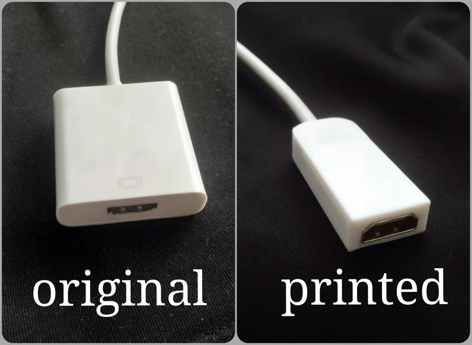
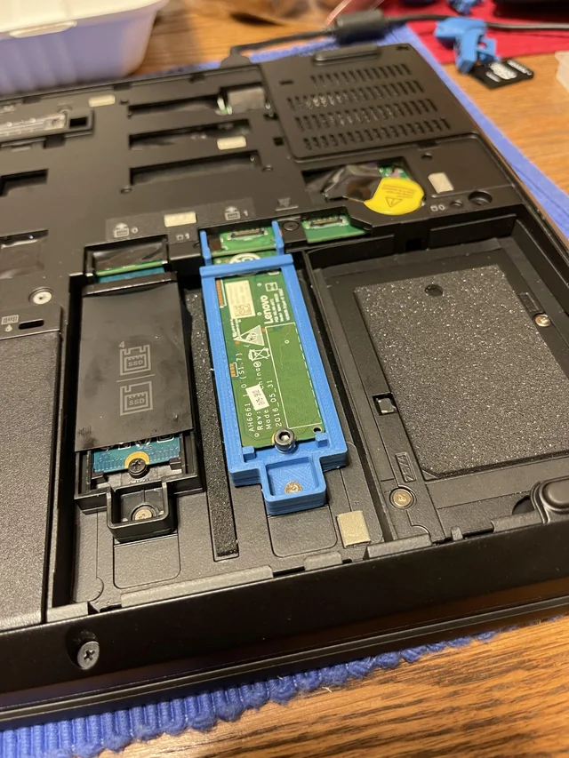
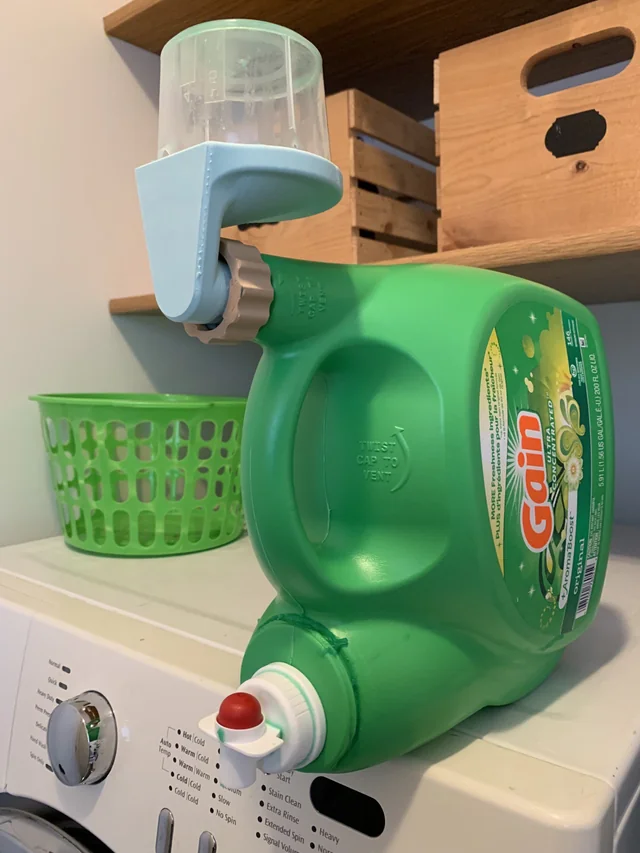
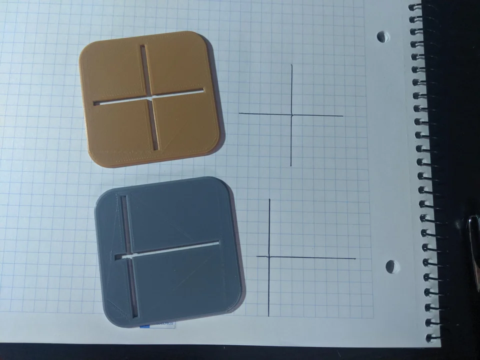

« Stencils I made for quickly drawing axes for Trigonometry
homework on graph paper »
[utilisateur supprimé] (20 sept. 2019), Reddit
« 3D printed casing for HDMI connector. Original was unreasonable big, so i made smaller one »

[Vojtech_Bucek_Brno] (20 févr. 2020), Reddit
« Lenovo wanted an exorbitant amount of money for one of these
caddies so I printed one instead. »

Demetry [demilavoto] (28 sept. 2021), Reddit
« Printed this to drain the cup back back into the jug of
laundry detergent. Works like a charm! »

[pickled_bologna] (14 janv. 2023), Reddit
« Stencils I made for quickly drawing axes for Trigonometry
homework on graph paper »

[utilisateur supprimé] (20 sept. 2019), Reddit